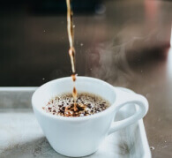
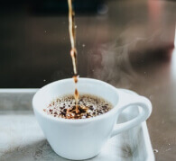
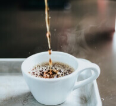
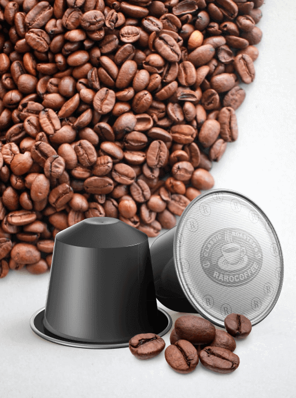

ייצור
האמנות שבפרטים הקטנים
 

לפני שנים מספר התגלה אופן חדש להכנת קפה. תוך 30 שניות בלבד מתקבל משקה טעים וארומטי להפליא. הכל בזכות הקפסולות – ההמצאה הטובה ביותר לאוהבי קפה.
לפני שנים מספר התגלה אופן חדש להכנת קפה. תוך 30 שניות בלבד מתקבל משקה טעים וארומטי להפליא. הכל בזכות הקפסולות – ההמצאה הטובה ביותר לאוהבי קפה.
מכונת הקפה הייחודית חוסכת זמן ואנרגיה,
מקלה על תהליך הכנת הקפה,
וקובעת את המינון המושלם
של הטעם המועדף עליכם.
לאחר שליקטנו את כל הטעמים הטובים ביותר,
בתחילה נהנינו מן ההקפה רק בקרב המשפחה והחברים הקרובים,
אך עם הזמן יותר ויותר אנשים רצו לנסות אותו.
לכן הוחלט להתחיל בייצור המוני על המתכונים שהכי אהבנו. כך החל סיפורו של RAROcoffee

הרצון לשמר את העושר בקפה טבעי הוביל אותנו לגילוי מדהים – הקפסולות. הסוד הוא כי הן אוטמות בצורה בטוחה את פולי הקפה הכתושים מיד לאחר הקלייה בזכות כך תקבלו 100% מהטעם ומהארומה של משקה ממריץ ישירות ממטעי הקפה הטובים ביותר בעולם.
בדרך, ארומת המשקה אבדה, הוא נעשה דל יותר. לכן הקפה הטעים ביותר היה זמין רק במטעים. אך כעת הוא תמיד יהיה איתכם!

ייחודיות משלו, ארומה ואפילו היסטוריה
לכל אחד מן הטעמים
לפני שנטחנים, הפולים עוברים הליך קלייה עדינה. למשקה טעם מעט פיקנטי, ארומה נפלאה וטעם לוואי עשיר שנשאר למשך זמן.
לפני שנטחנים, הפולים עוברים הליך קלייה עדינה. למשקה טעם מעט פיקנטי, ארומה נפלאה וטעם לוואי עשיר שנשאר למשך זמן.
משקה במרקם עשיר עם ניחוחות פירותיים עדינים. חוזק של קפה זה מוערך על ידי מביני עניין אמיתיים של קפה.
כל אחת מקפסולות RAROcoffee הינה מסע מרגש ברחבי העולם. פולי קפה מקוסטה ריקה, ברזיל, מרכז ודרום אמריקה, אפריקה החמה, ג׳מייקה, אשר נבחרים בקפידה בטרם שהם מספקים את ההרמוניה הקסומה בין הטעם לארומה.
כל קפסולה הינה חווית של קפה טבעי קלוי אשר הוכנסה לקפסולה קטנה
הרצון לשמר את העושר בקפה טבעי הוביל אותנו לגילוי מדהים – הקפסולות. הסוד הוא כי הן אוטמות בצורה בטוחה את פולי הקפה הכתושים מיד לאחר הקלייה בזכות כך תקבלו 100% מהטעם ומהארומה של משקה ממריץ ישירות ממטעי הקפה הטובים ביותר בעולם.
מ-800 שילובי טעמי קפה בעולם.
כיום קיימים יותר
נכון שזה נתון מדהים?
אנו מספקים פולים מכל רחבי העולם.
אם אתם, כמוני, מתחילים את היום שלכם בקפה, אתם בטוח תתאהבו ב- RAROcoffee. יש כ״כ הרבה טעמים, ניחוחות מגוונים, ולמרות המגוון הקפה כל כך קל להכנה! קפסולה אחת בבוקר – וקל יותר לכבוש את העולם.
בגלל התפקיד החדש אני מתעוררת מאוד מוקדם עכשיו, לכן בלי קפה זה פשוט בלתי אפשרי. אבל לבשל נכון זה קשה, במיוחד בבוקר. RAROcoffe הוא גלגל ההצלה שלי! לחצתי על הכפתור וזהו, הקפה מוכן וטעים ביותר.
איפה הקפה הזה היה קודם? ניסיתי כמה טעמים ולא טעמתי טעם כל כך עשיר כבר מלא זמן. והוא גם קל להכנה שאני פשוט לא מאמין לפעמים איך חייתי בלי כל השנים האלו.

לחברים שלי ולי יש מסורת קבועה. בערך פעם בשבוע אנחנו נפגשים לפטפט על החדשות בפרלמנט, והדבר היחיד שלא משתנה במפגשים שלנו זה RAROcoffee.
בכנות, אני אוהב תה. תמיד הייתי אדיש לקפה, אך לפני זמן לא רב כיבדו אותי בכוס קפה של RAROcoffee ונדהמתי. עכשיו, שבוע לאחר מכן לצד התה שלי יש לי חבילת RARO.
נשמח לעמוד לצידכם ואפילו לעזור לכם לבחור את הטעם המועדף עליכם של RARO
שלחו לנו דוא״ל, זה פשוט
info@rarocoffee.com
ПРИ ПОСЕЩЕНИИ ВСЕХ ОНЛАЙН РЕСУРСОВ RAROcoffee ВЫ ДАЕТЕ СВОЕ СОГЛАСИЕ НА ИСПОЛЬЗОВАНИЕ ФАЙЛОВ COOKIE, КОТОРЫЕ УЛУЧШАЮТ НАШ СЕРВИС.
Если Вы не соглашаетесь с тем, чтобы ресурс использовал cookie-файлы, Вы можете изменить настройки Вашего браузера или покинуть этот сайт.
Cookie-файлы – это небольшие, безопасные текстовые файлы, которые отправляет сайт и затем сохраняются на Вашем ПК, смартфоне, планшете или другом устройстве, которым Вы пользуетесь при посещении онлайн-ресурса.
Файлы этого типа обеспечивают более быстрый, удобный и простой доступ к содержимому сайта, определяют эффективность рекламы и поисковых систем. Cookie-файлы облегчают навигацию по сайту, предоставляют информацию о наиболее посещаемых виртуальных страницах, действиях пользователей, что способствует продвижению продуктов.
Cookie позволяют Вам сохранить данные при обновлении сайта. Файлы этого типа не располагают информацией, которая позволяет идентифицировать Вашу личность.
При отключении этой функции мы не несем ответственности за корректную работу онлайн-ресурса в Вашем браузере.
Все онлайн-ресурсы RAROcoffee используют следующие категории cookie-файлов:
- Основные cookie , которые устанавливаются сайтом и могут быть прочитаны только этим сайтом. Например, когда файл cookie с нашего сайта передается в Ваш браузер, только наш сайт сможет его распознать.
- Сторонние cookie, которые устанавливаются не RAROcoffee, а, например, сторонней аналитической компанией, которая передает в Ваш браузер собственные файлы cookie.
Мы предоставляем вам список файлов cookie, которые используем:
Пожалуйста, учтите, что сторонние cookie управляются соответствующими партнерами и поставщиками услуг. У нас нет ни доступа к файлам cookie наших партнеров, ни возможности их контролировать. Вам нужно ознакомиться с политикой в отношении файлов cookie соответствующей сторонней компании, чтобы узнать больше об использовании информации, которую они собирают.
Мы используем cookie, чтобы лучше понимать, как вы взаимодействуете с материалами на наших ресурсах. Кроме того, эти небольшие файлы могут дополнить ваши впечатления от использования, так как запоминают Ваши личные предпочтения. Cookie помогают нам считать, сколько пользователей посещают определенные страницы наших ресурсов.
Еще одна причина использования файлов cookie – показывать Вам материалы, подобранные под Ваши конкретные интересы. В частности, они помогают изучать Ваше поведение, чтобы показывать Вам таргетированную рекламу на сторонних сайтах с целью подбора товаров и услуг под Ваши индивидуальные потребности.
Любой браузер, загрузивший наш сайт, получит cookie. Вы всегда можете отказаться от обоих типов cookie на нашем сайте, изменив у себя настройки файлов cookie.
Прежде всего, пожалуйста, учтите, что большинство браузеров принимает cookie по умолчанию. Вы имеете право принять или отклонить передачу файлов cookie на Ваш ПК или другое устройство, в любое время изменив настройки в вашем браузере в соответствии с вашими предпочтениями в отношении файлов cookie.
Вы можете контролировать и/или удалять файлы cookie по Вашему усмотрению.
Вы можете удалить все файлы cookie, уже имеющиеся на вашем ПК или другом устройстве, и настроить большинство браузеров на отказ принимать файлы cookie. Однако в этом случае Вам придется вручную корректировать некоторые установки при каждом посещении сайта. Из-за этого некоторые сервисы и функции могут не работать должным образом.
Способы управления cookie-файлами указаны в инструкции Вашего браузера.
ПРИНИМАЮ